Duchy of Zeon Fleets Duchy of Zeon Fleets
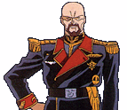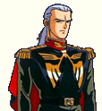 The Delaz Fleet Lying at the rear end of the duchies defense line, the Delaz Fleet were heroes of the early part of the war, but are now delegated to rear line defense. Aiguille Delaz is fiercely loyal to Ghiren, and his ace pilot Anaval Gato is one of the best of the Duchies mobile suit pilots. 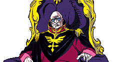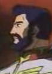 The Side 3 Defense Fleet The final line of defense in the Duchies arsenal, the Side 3 Defense Fleet is spearheaded by the Great Degwin and commanded by the sovereign himself. However, Degwin spends much of his time in Zum City, and at these times the fleet is left with "White Wolf" Shin Matsunaga, one of the best aces of the early war. Shin was originally at Solomon, serving as Dozles personal bodyguard, until he had to be reassigned after the slander of the Battle of the Jupitoris. 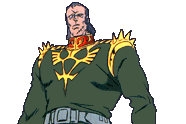 The Solomon Defense Fleet Lying halfway between the Zeons front line and their defensive string of asteroids and moon fortresses, Dozle Zabi conducts the operations at 2 days from Earth from his Gwazine. A fierce and honorable fighter, as well as a tremendously large and muscular human being, Dozle is well liked by the SAF, and a natural born soldier. 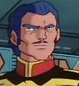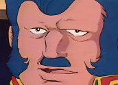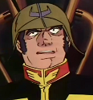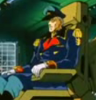 The Barrier Fleet Commanders: Bomer, Conscon, Dren and Helsing Four of the duchies finest fleet commanders, all of these men are survivors of Lourm, and determined to defeat the Earth Federations recent resurgence in space. Conscon, Bomer and Dren are all proud SAF commanders, the honorable Conscon working closely with Dozle Zabi and Dren with Char Aznable earlier in the war. Bomer is a bit of an oddball, believing in heavy firepower above mobile suits, and arranging his fleet accordingly. Lastly, Helsing is one of Kycillias MAF commanders from Granada, and uses the MAFs newest designs to devastating effect. 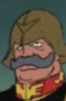 The Space Resupply Fleet A heavily guarded fleet with a dangerous mission, the ZMF Space Resupply Fleet ferries cargo between Odessa and Side 3, constantly punching through Federation space to deliver new troops to the enemy and resources to the colonies. As such, it is defended by some of the top pilots of the ZMF, Gadems crew boasting the arguably best pilot in the Earth Sphere, "Crimson Lightning" Johnny Ridden. 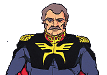 The Earth Resupply Fleet Used to ferry cargo between Constantinople, Odessa, Baikonour and Lhasa, the Earth Resupply Fleet is a key player in Zeons resource mining operation, and as such is defended heavily. At the helm of the Blauer Reise are "Blue Giant" mobile suit ace Ramba Ral and his wife Hamon, honorable and friendly soldiers who command the respect and loyalty of their men. Ramba Ral is known for always fighting fair, and also for his excellent piloting ability, proving himself during the One Week War and the Battle of Lourm. |